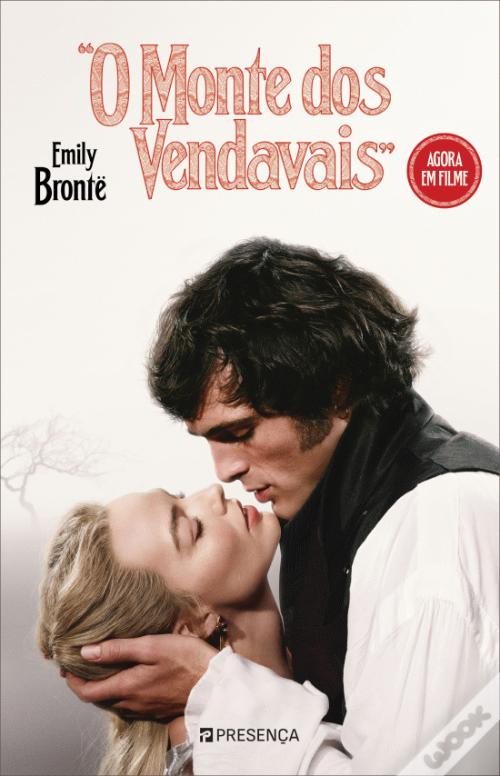

O Monte dos Vendavais
Um clássico intenso que não pede desculpa: “Wuthering Hights”. Há livros que gostamos… e há livros que nos marcam. O Monte dos Vendavais, de Emily Brontë pertence claramente à segunda categoria. Publicado em 1847, este clássico da literatura inglesa continua a ser uma leitura poderosa, sombria e emocionalmente intensa, daquelas que ficam connosco muito depois de virarmos a última página. Uma das primeiras coisas que notei ao começar foi a diferença na escrita. Não estava muito habituada à literatura inglesa mais antiga, e no início sente-se bem a distância em relação aos livros modernos. A linguagem é mais densa e o ritmo diferente um pouco teatral até. No entanto, essa estranheza inicial desaparece rapidamente. À medida que avançamos na leitura, percebemos que esta história simplesmente não funcionaria da mesma forma com uma escrita mais atual. Há algo nesta forma clássica de narrar que encaixa perfeitamente na atmosfera do livro. E que atmosfera! A atmosfera gótica e sombria acompanha perfeitamente a tragédia da narrativa. As personagens são intensas, complexas e, muitas vezes, difíceis de gostar. Em vários momentos mostram o lado mais feio da natureza humana, o que torna a história crua e nada romantizada e é isso que a torna tão marcante. Catherine Earnshaw e Heathcliff são duas personagens impossíveis de esquecer. A relação entre eles é obsessiva, possessiva e profundamente tóxica, mas existe ali uma forma de amor ? Na minha opinião sim existe. Não a forma de amor ideal, talvez um pouco desfigurado, mas com uma ligação intensa que parece unir os dois de forma inevitável. A narrativa é detalhada e consegue transportar-nos facilmente para aquele tempo e espaço, acompanhando diferentes gerações e tornando a história ainda mais envolvente. É um livro que prende porque há sempre a curiosidade de continuar a ler para descobrir o rumo das consequências das escolhas dos personagens. No final, apesar de toda a intensidade, tristeza, vingança e raiva que atravessam a história, existe um certo alívio ao ver a narrativa ir para algo mais próximo da paz. É um livro duro, intenso e memorável e recomendo muito a leitura para quem quer experimentar um clássico que realmente fica connosco.